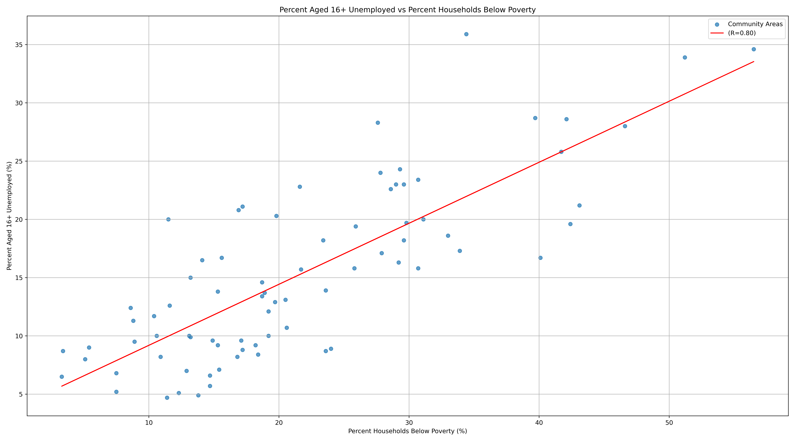
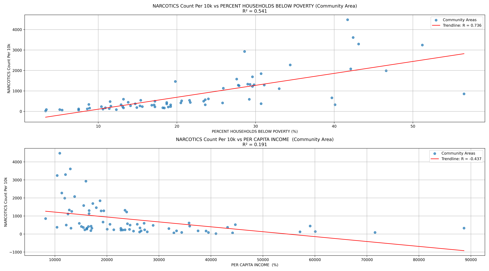

Now that we have an understanding of the socioeconomic landscape of Chicago, we can start to look at how crime patterns are distributed across the city, and how they may relate to the socioeconomic indicators we just explored.
The following visualizations show the distribution of different types of crime across the community areas in Chicago, as well as how they correlate with the hardship index. We will look at some more crime specific cases related to socioeconomic hardship,
and try to interpret how the crime landscape of Chicago is shaped by the socioeconomic conditions of its residents.
Hardship Index vs Crime Rate per 10k Residents
This interactive visualization shows the relationship between the socioeconmic indicators and the crime rate per 10,000 residents across different community areas in Chicago.
We can see that the R-value between the hardship index and the crime rate is approximately 0.601, which indicates a moderate positive correlation between the two variables.
This suggests a notable relationship where areas with higher socioeconomic hardship tend to experience higher rates of crime.
The R² value of 0.361 indicates that about 36.1% of the variation in the crime rate can be explained by the hardship index. While socioeconomic hardship is a significant factor, the remaining variance supports the idea that other elements also influence crime patterns in Chicago. The plot is interactive, allowing different socioeconomic indicators to be selected and compared against the crime rate.
Interactive scatter plot showing the relationship between the hardship index and crime rate per 10,000 residents across Chicago's community areas.
Unemployment vs Poverty
Before looking at the relationship between a specific crime type and the socioeconomic indicators, we can first look at the relationship between two of the socioeconomic indicators themselves: the percentage of the population unemployed and the percentage of households below poverty.
The correlation between them has been computed to be 0.800, indicating a strong positive correlation between the two variables. While this strong correlation is expected, as unemployment is a key factor contributing to poverty,
this correlation will be the reason that only one of the two indicators will be used in the subsequent analysis, as they are likely to provide similar insights into the relationship between crime and socioeconomic conditions in Chicago.

Scatter plot showing the relationship between unemployment rate and poverty rate across Chicago's community areas.
Narcotics Distribution vs Socioeconomic Indicators
These scatter plots show the relationship between the narcotics crime rate (per 10,000 residents) and two socioeconomic indicators: the percentage of households below poverty, and the percentage of residents aged 16 and older who are unemployed, across different community areas in Chicago.
The R² between the narcotics rate and the percentage of households below poverty is 0.541, indicating that the poverty rate can explain around 54.1% of the variation in narcotics rates. Looking at the plot, there is a strong positive correlation (R = 0.736) between the two variables, which suggests that areas with a higher percentage of households below poverty tend to have a higher rate of narcotics-related crimes.
The R² between the narcotics rate and the percentage of unemployed residents is 0.484, indicating that unemployment can explain around 48.4% of the variation in narcotics rates. The plot also shows a positive correlation (R = 0.696) between these two variables, suggesting that areas with higher unemployment rates similarly tend to have higher rates of narcotics-related crimes.
While there are strong correlations between the narcotics rate and these socioeconomic indicators, it is important to note that these relationships are not necessarily causal, and other factors may be at play in determining crime patterns in Chicago. Specifically, higher recorded narcotics counts in disadvantaged areas could be heavily influenced by systemic factors, such as differences in policing strategies, patrol density, or resource allocation, rather than solely indicating the behavior of the residents themselves.

Scatter plots comparing narcotics crime rates per 10,000 residents against two socioeconomic indicators: poverty rate (R=0.736, R²=0.541) and unemployment rate (R=0.696, R²=0.484).